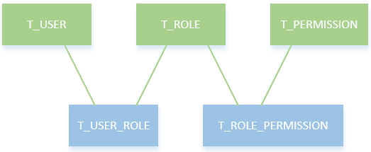
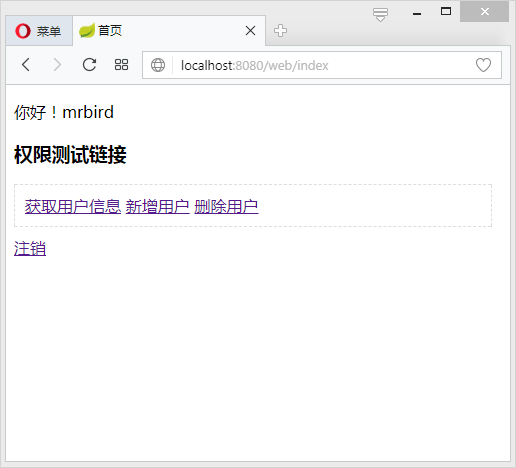
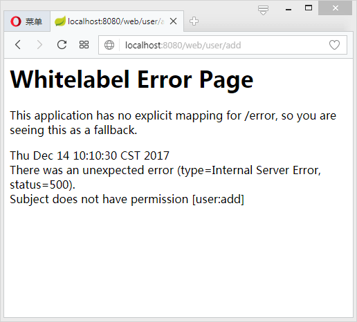
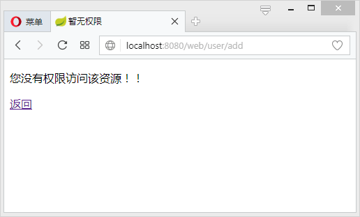

在《Spring-Boot-shiro用户认证》中，我们通过继承AuthorizingRealm抽象类实现了doGetAuthenticationInfo()方法完成了用户认证操作。接下来继续实现doGetAuthorizationInfo()方法完成Shiro的权限控制功能。
授权也称为访问控制，是管理资源访问的过程。即根据不同用户的权限判断其是否有访问相应资源的权限。在Shiro中，权限控制有三个核心的元素：权限，角色和用户。
库模型设计
在这里，我们使用RBAC（Role-Based Access Control，基于角色的访问控制）模型设计用户，角色和权限间的关系。简单地说，一个用户拥有若干角色，每一个角色拥有若干权限。这样，就构造成“用户-角色-权限”的授权模型。在这种模型中，用户与角色之间，角色与权限之间，一般者是多对多的关系。如下图所示：

根据这个模型，设计数据库表，并插入一些测试数据：
1 | -- ---------------------------- |
一些非空约束这里就不贴了，可参考源码中的init.sql。
上面的sql创建了五张表：用户表T_USER、角色表T_ROLE、用户角色关联表T_USER_ROLE、权限表T_PERMISSION和权限角色关联表T_ROLE_PERMISSION。用户mrbird角色为admin，用户tester角色为test。admin角色拥有用户的所有权限（user:user,user:add,user:delete），而test角色只拥有用户的查看权限（user:user）。密码都是123456，经过Shiro提供的MD5加密。
Dao层
创建两个实体类，对应用户角色表Role和用户权限表Permission：
Role:
1 | public class Role implements Serializable{ |
Permission:
1 | public class Permission implements Serializable{ |
创建两个dao接口，分别用户查询用户的所有角色和用户的所有权限：
UserRoleMapper：
1 |
|
UserPermissionMapper：
1 |
|
其xml实现：
UserRoleMapper.xml：
1 |
|
UserPermissionMapper.xml：
1 |
|
数据层准备好后，接下来对Realm进行改造。
Realm
在Shiro中，用户角色和权限的获取是在Realm的doGetAuthorizationInfo()方法中实现的，所以接下来手动实现该方法：
1 | public class ShiroRealm extends AuthorizingRealm { |
在上述代码中，我们通过方法userRoleMapper.findByUserName(userName)和userPermissionMapper.findByUserName(userName)获取了当前登录用户的角色和权限集，然后保存到SimpleAuthorizationInfo对象中，并返回给Shiro，这样Shiro中就存储了当前用户的角色和权限信息了。
除了对Realm进行改造外，我们还需修改ShiroConfig配置。
ShiroConfig
Shiro为我们提供了一些和权限相关的注解，如下所示：
1 | // 表示当前Subject已经通过login进行了身份验证；即Subject.isAuthenticated()返回true。 |
要开启这些注解的使用，需要在ShiroConfig中添加如下配置：
1 | ... |
Controller
编写一个UserController，用于处理User类的访问请求，并使用Shiro权限注解控制权限：
1 |
|
在LoginController中添加一个/403跳转：
1 | ("/403") |
前端页面
对index.html进行改造，添加三个用户操作的链接：
1 |
|
当用户对用户的操作有相应权限的时候，跳转到user.html：
1 |
|
403页面：
1 |
|
测试
启动项目，使用mrbird的账户登录后主页如下图所示：

点击”获取用户信息连接”：

因为mrbird角色为admin，对着三个链接都由访问权限，所以这里就不演示了。
接着使用tester用户登录。因为tester用户角色为test，只拥有（user:user）权限，所以当其点击”新增用户”和”删除用户”的时候：

后台抛出org.apache.shiro.authz.AuthorizationException: Not authorized to invoke method:…异常！！！
这里有点出乎意料，本以为在ShiroConfig中配置了shiroFilterFactoryBean.setUnauthorizedUrl("/403");，没有权限的访问会自动重定向到/403，结果证明并不是这样。后来研究发现，该设置只对filterChain起作用，比如在filterChain中设置了filterChainDefinitionMap.put("/user/update", "perms[user:update]");，如果用户没有user:update权限，那么当其访问/user/update的时候，页面会被重定向到/403。
那么对于上面这个问题，我们可以定义一个全局异常捕获类：
1 |
|
启动项目，再次使用tester的账号点击”新增用户”和”删除用户”链接的时候，页面如下所示：

页面已经成功重定向到/403。
源码链接https://github.com/wuyouzhuguli/Spring-Boot-Demos/tree/master/13.Spring-Boot-Shiro-Authorization